01.1
城市人群、居住场景与文化空间的设计探索。通过场地分析、图解与模型，把问题转化为可以讨论的方案。
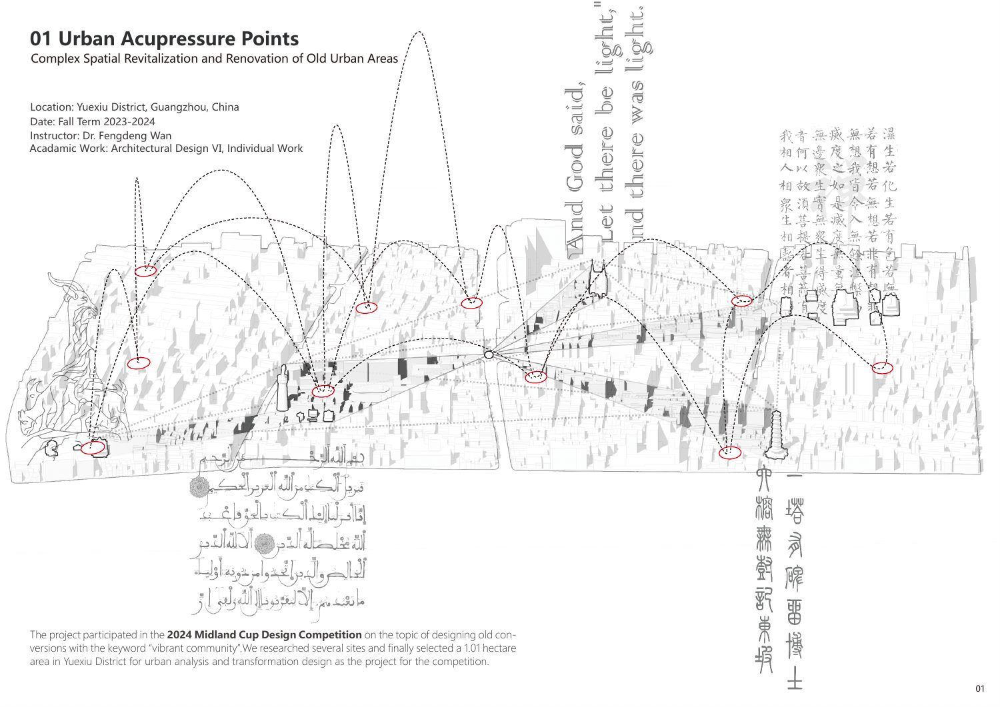
Urban Acupressure Points 城市与使用人群 ↗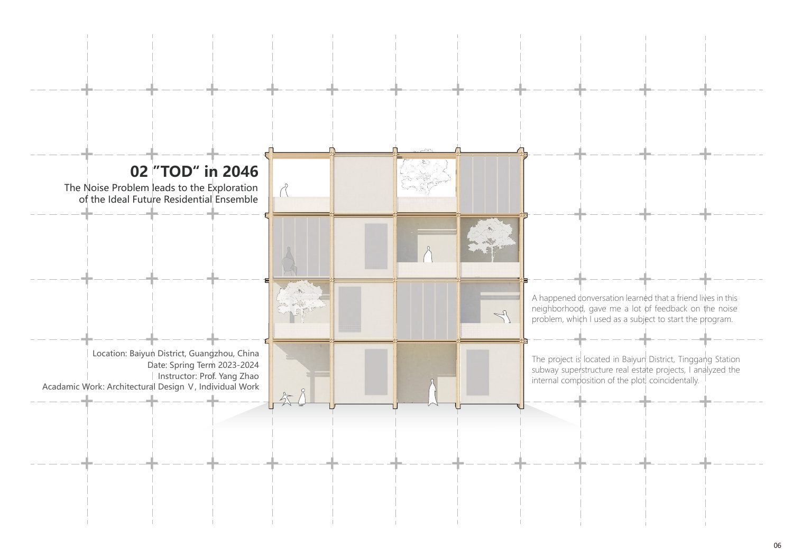
TOD in 2046 居住反馈与空间组织 ↗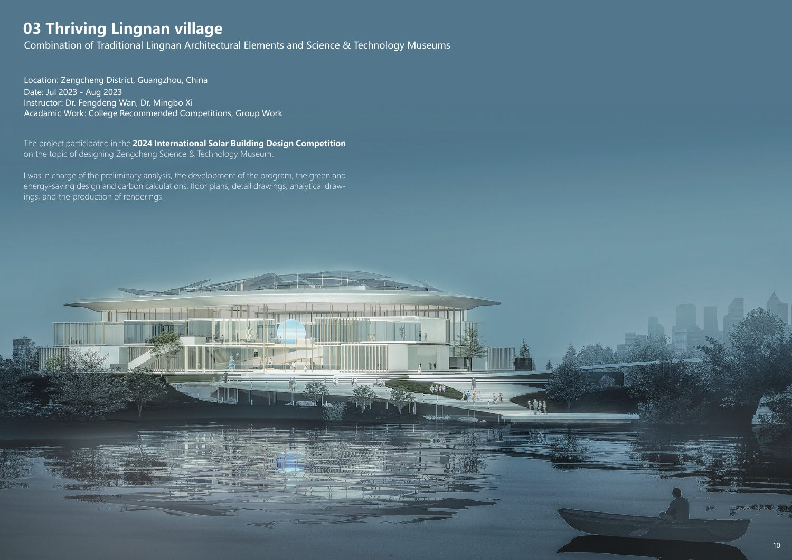
Thriving Lingnan Village 文化与参观路径 · 团队作品 ↗城市微更新与居住项目为个人学术作品；岭南项目为团队作品，个人分工待补。
ARCHITECTURE · DIGITAL EXPERIENCES · PERSONAL CULTURE
我是廖俊裕。从建筑与城市研究出发，
探索人的需求、内容体验与 AI 辅助工作流。
01 / SPATIAL PRACTICE
建筑经历 · 从场地与使用情境，到方案、协作与交付。
城市人群、居住场景与文化空间的设计探索。通过场地分析、图解与模型，把问题转化为可以讨论的方案。

Urban Acupressure Points 城市与使用人群 ↗
TOD in 2046 居住反馈与空间组织 ↗
Thriving Lingnan Village 文化与参观路径 · 团队作品 ↗城市微更新与居住项目为个人学术作品；岭南项目为团队作品，个人分工待补。
参与园方需求沟通与场地问题梳理，负责草模、方案设计与建模；参与视觉更新、施工沟通、交付及落地反馈跟进。
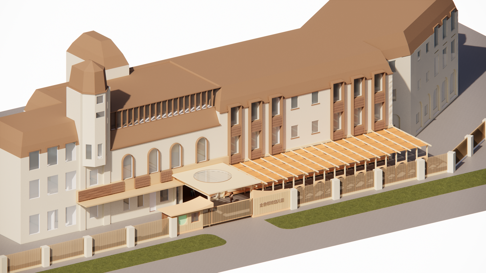
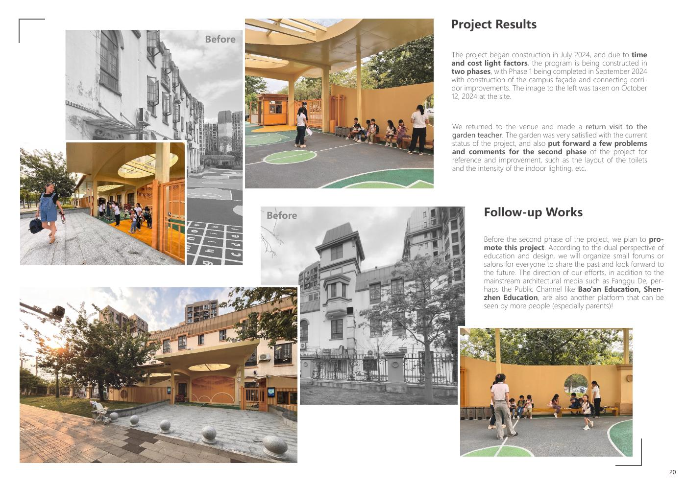
前期调研
场地问题与园方需求
草模与方案建模
视觉系统更新
施工团队沟通
节点推进与交付
回访与意见整理
布局、照明反馈跟进
团队改造项目。实习时间为2024.04–06；后续落地和回访记录来自作品集，不计作实习时长。
以曼彻斯特 South Collyhurst 为场地，从铁路边缘、绿地断点和社区连接出发，探索合住、独居与家庭三类居住方式。
以上为学术设计提案中的信息，
并非已建成项目或实测成效。
比较伦敦与曼彻斯特唐人街，研究文化身份如何通过边界、移动、商业连续性、语言景观和个人感知形成。
相似的文化符号，为什么形成不同的场所体验？
步行观察、摄影、语音记录与自我民族志反思。
结合路线、影像与文献，对照空间条件与个人感知。
伦敦呈现更连续的沉浸体验；曼城的文化地标带来更即时的辨识。
Experiencing Chineseness: A Comparative Study of Sense of Place in London and Manchester Chinatowns。研究基于个人田野体验，不代表所有居民或访客；访谈与长期观察属于论文提出的后续研究方向。
02 / EXPERIMENTS
AI 探索 · 把研究与运营问题转化为可体验的工作流。
STUDIO C / DIGITAL EXTENSION
用 AI 辅助整理报告信息，建立可追溯的规则可视化；进一步将预算、通勤和居住偏好组织为比较与解释。
体验租房 Demo ↗查看辅助分析 ↗本地规则原型 · GBP / week · 虚构示例房源 · 未接通 API
预算余量 · 通勤时间 · 安静偏好
TIKTOK AI OPS ASSISTANT / WORKFLOW PROTOTYPE
在账号起步阶段，将脚本检查、发布后复盘与下一轮选题组织为一套工作流。使用 Codex 与 VS Code 搭建 Demo，探索内容运营的信息输入与输出。
输入选题、受众与脚本，展示结构诊断和优化建议。
整理互动指标与评论，将反馈归纳为需要回应的问题。
把复盘结果转成选题、开头、行动提示和内容步骤。
截图记录：2026.09.08 · Mock analysis。示例数据、评分与建议用于流程演示，不代表真实账号表现或已验证的 AI 推理效果；账号处于起号阶段，尚无可归因于工具的增长成果。
03 / CONTENT & DIGITAL PRESENCE
个人账号与网站 · 创作、反馈、归档，连接成完整的内容体验。
PERSONAL PHOTOGRAPHY / DOUYIN
围绕胶片、旅行、日常和音乐，独立开展选题、拍摄、剪辑、封面与发布。用系列标题和画面组织作品，连接个人表达与内容归档。
截图记录：2026.10.11。作品卡片中的数字为播放量；主页“获赞”为累计点赞，两者不混用。
PET CONTENT / DOUYIN
围绕猫咪日常、拟人化表达与短视频剪辑组织内容，通过标题、字幕和封面建立鲜明的观看入口。
截图记录：2026.10.11。宠物号作品卡片显示获赞；单条表现不等同于稳定增长，也不归因于个人网站。B站历史数据保留在简历中。
PERSONAL ARCHIVE / AI-ASSISTED DEVELOPMENT
通过 AI 辅助开发，将建筑、胶片、音乐与宠物内容组织成个人网站。探索内容分类、浏览路径与桌面、移动端呈现。
首页静态展示。后续补充各分区截图拼贴、开发过程与运营案例。
04 / FILM JOURNAL
童谣篇 · 胶片摄影选辑。
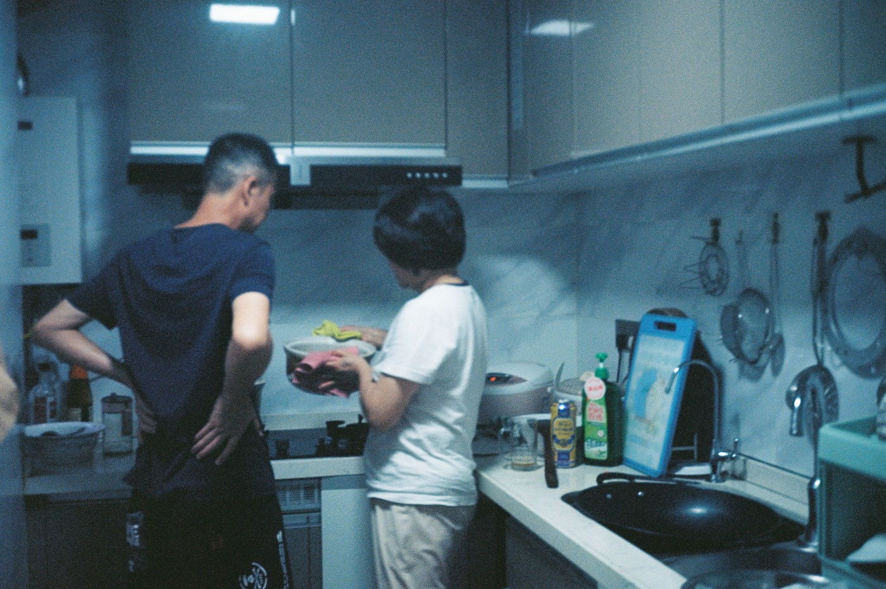
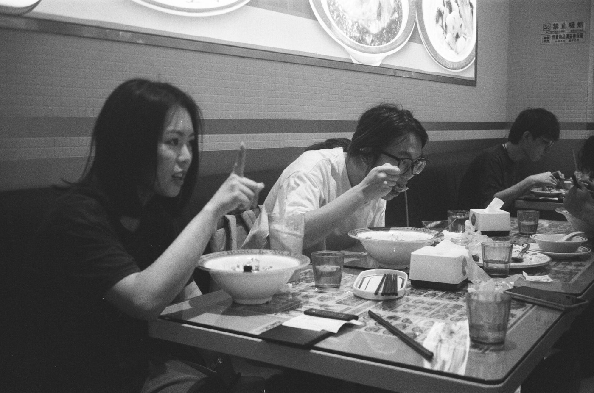
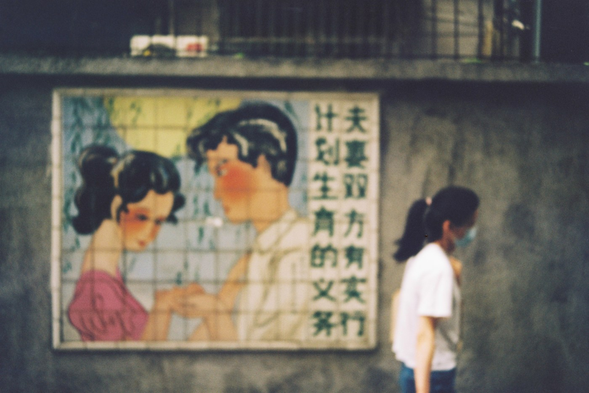
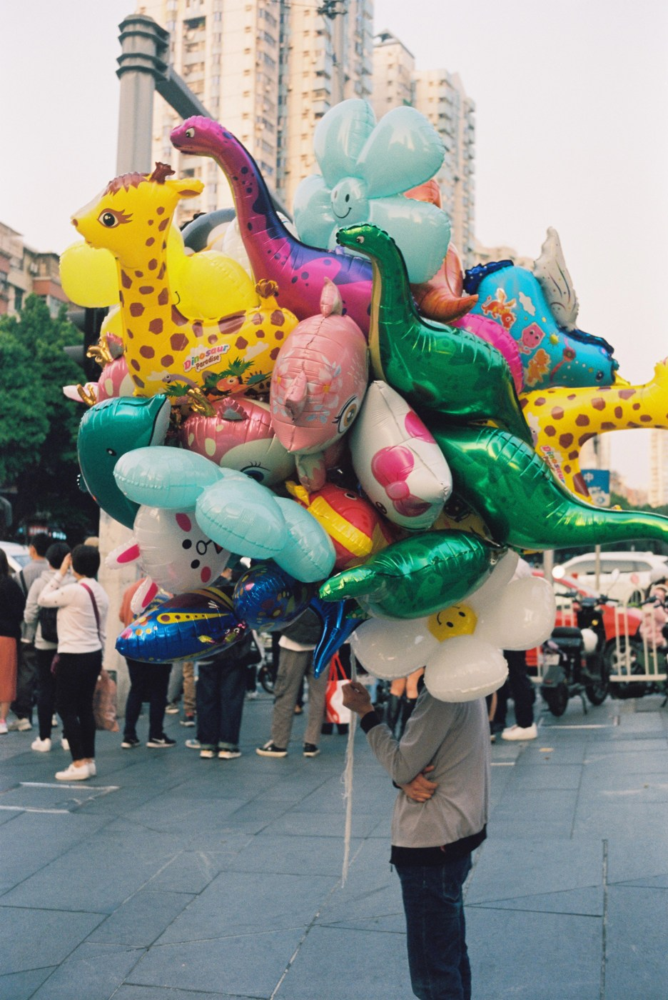
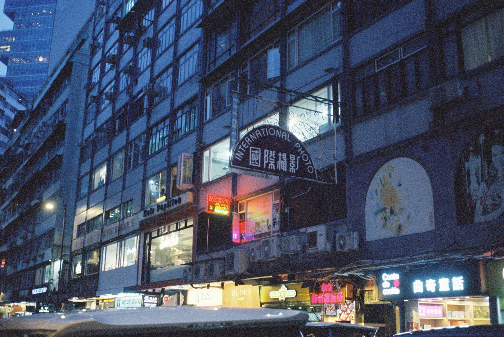
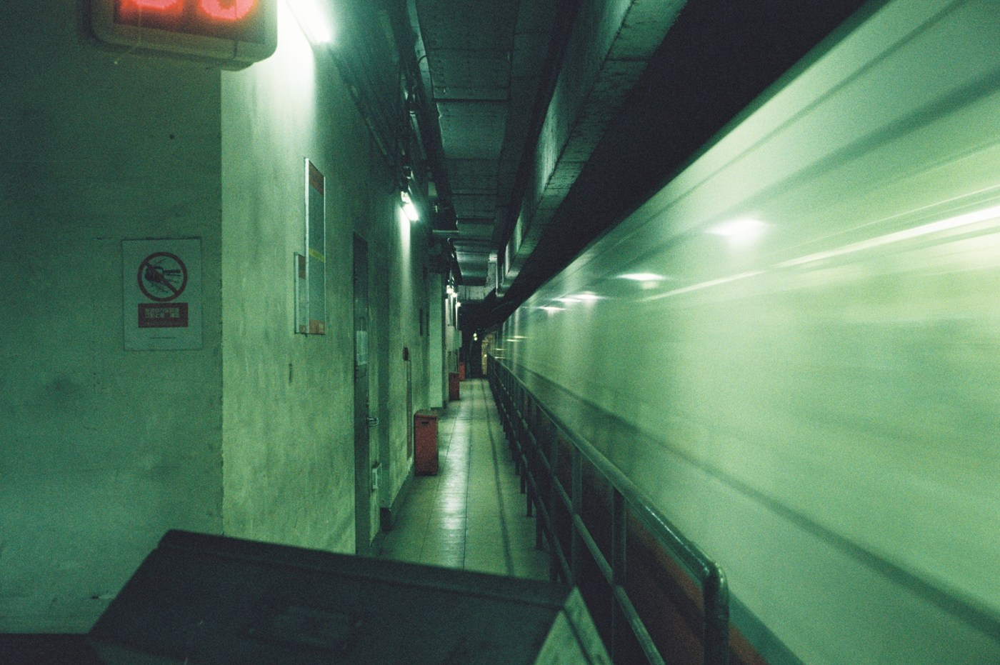
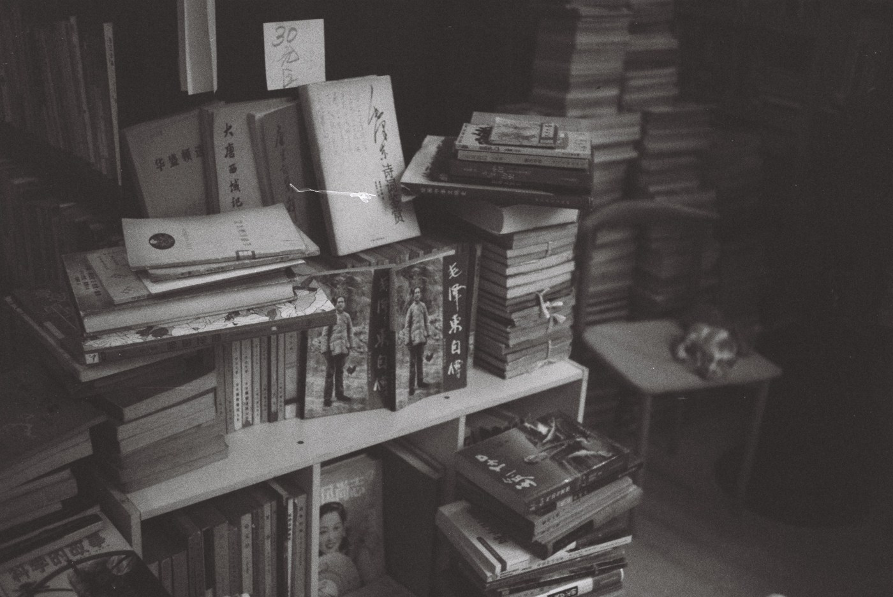
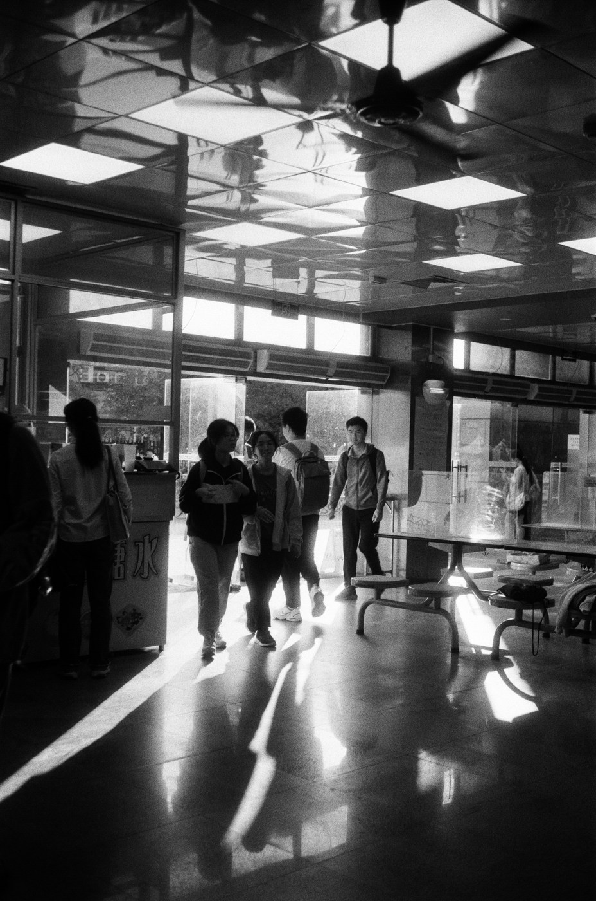
童谣篇 / Selected frames · 从已有主题选辑中选取八张展示，点击可查看大图。